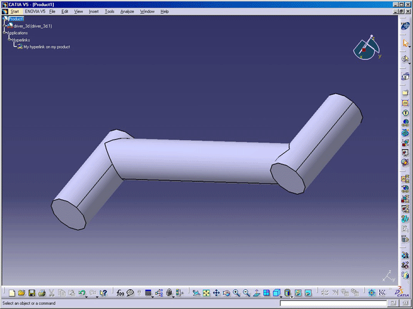

DMU Navigator |
Creating a Hyperlink |
|
This macro shows you how to use hyperlinks. The macro assumes that a CATProduct has been loaded. 
|
|
|
CAADmuHyperlinks is launched in CATIA [1]. A previously opened document is needed. CAADmuHyperlinks.CATScript is located in the CAAScdDmuUseCases module. Execute macro (Windows only).
|
|
|
CAADmuHyperlinks includes four steps:
Retrieving the hyperlinks collectionThe Hyperlinks collection (see Creation of a hyperlink
Creation of two URLsThe Hyperlink object enables the creation of URLs thru Removal of one URLThe Hyperlink object enables the removal of URLs thru |

[Top]
This use case has shown how to use hyperlinks. Specifically, it has illustrated how to :
[Top]
| [1] | Replaying a macro |
| [2] | DMU Navigator automation objects |
[Top]
DMU Navigator Home DMU Space Analysis Home DMU Kinematics Simulation Home
Copyright © 2006, Dassault Systèmes. All rights reserved.